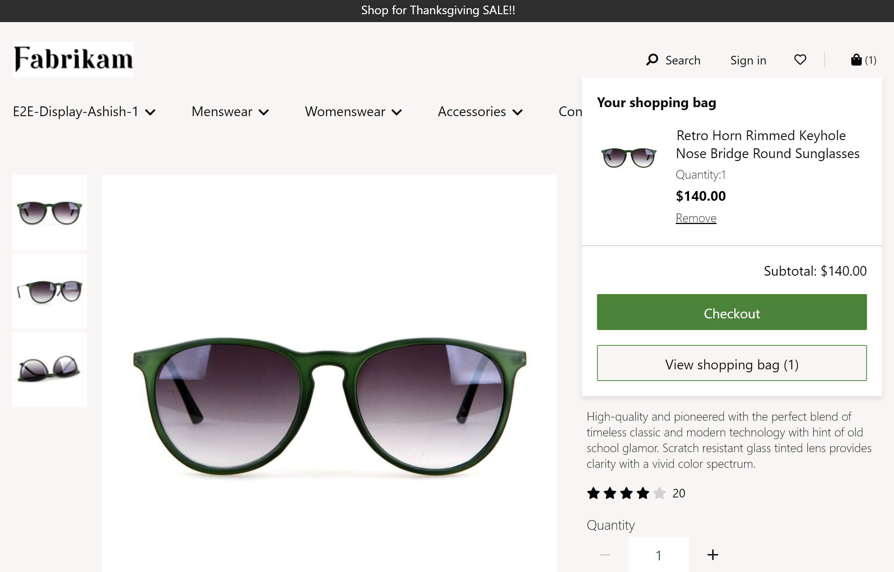

Symbol Einkaufswagenmodul
Important
Dynamics 365 Retail ist jetzt Dynamics 365 Commerce und bietet umfassende Handelsfunktionen für alle Kanäle – von E-Commerce über Shops bis hin zu Callcentern. Weitere Informationen zu diesen Änderungen finden Sie unter Microsoft Dynamics 365 Commerce.
Dieses Thema enthält das Warenkorbsymbolmodul und es wird beschrieben, wie es Siteseiten in Microsoft Dynamics 365 Commerce hinzugefügt werden.
Übersicht
Warenkorbsymbol – Das Warenkorbsymbolmodul im Kopfmodul der Seite zeigt die Anzahl der Artikel im Warenkorb zu einem bestimmten Zeitpunkt an. Das Warenkorbsymbolmodul zeigt auch eine Warenkorbübersicht (auch als Minikorb bezeichnet) an, wenn Sie den Mauszeiger über das Warenkorbsymbol halten. Der Mini-Warenkorb bietet dem Benutzer eine Zusammenfassung der Artikel im Warenkorb, ohne zur Warenkorbseite navigieren zu müssen. Darüber hinaus kann der Benutzer direkt zur Checkout-Seite gehen, wenn er mit der Zusammenfassung zufrieden ist. Dies reduziert die Anzahl der Seitennavigationen und beschleunigt das Auschecken.
Note
Hilfe für das Modul Warenkorbsymbol finden Sie in Dynamics 365 Commerce Release 10.0.11.
Das folgende Bild zeigt ein Beispiel für ein Warenkorbsymbolmodul, das einen Mini-Wagen in der Fabrikam-Kopfzeile anzeigt.

Moduleigenschaften
- Mini-Warenkorb anzeigen – Wenn true, kann mit dieser Eigenschaft eine Warenkorbübersicht (Mini-Warenkorb) angezeigt werden, wenn Sie den Mauszeiger über das Warenkorbsymbol bewegen. Diese Funktionalität wird nur für Desktop-Ansichtsports unterstützt.
Ein Warenkorbsymbolmodul einer Seite hinzufügen
Informationen zum Hinzufügen eines Warenkorbsymbolmoduls finden Sie unter Kopf-Modul.